Weather graphs on Yak Shaving Day
It would be quite easy to get temperature and humidity data into a graph with some Arduino code , an ESP32 and something like Thingspeak. However where’s the fun in that ? In this project I’ll be using the ESP-IDF framework for the ESP32, C on linux to write a proxy for InfluxDB and Grafana to create some graphs.
…at least, that’s what I thought about a year ago. Let me explain, in 2016 i did the arduino bit as described above and created the following gas and weather graphs in a few weeks:
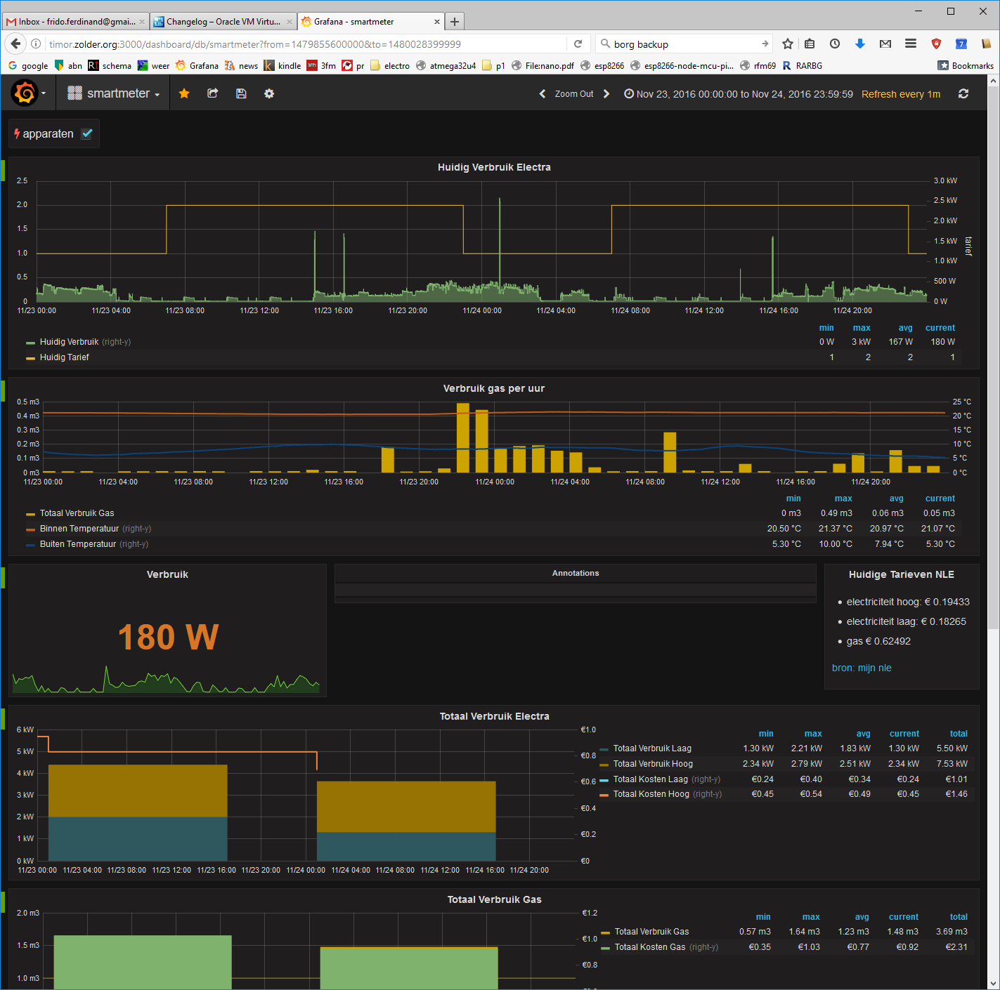 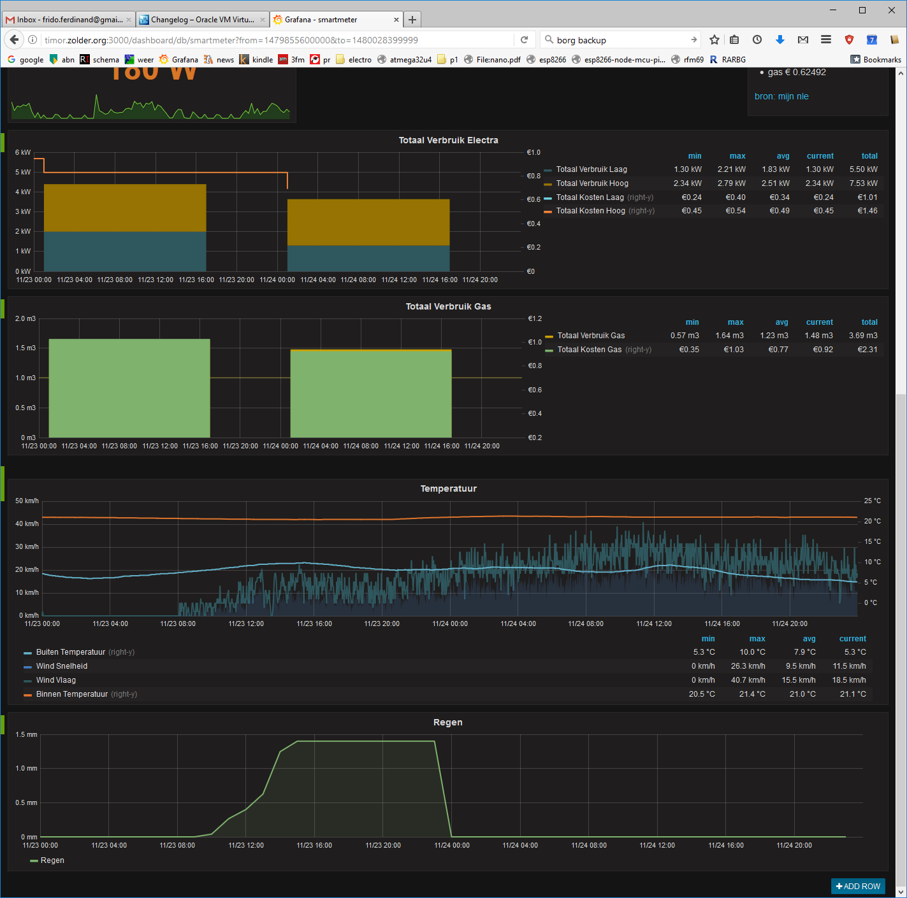
Nice, but a year later I moved to a different location and did not have access to a the rackmounted server in a colocation anymore, which I could use for the really high resolution time graphs with influxdb and grafana. Thus the plan was to use my small single board computer to do this job, it’s an Odroid C1 (similar to Raspberry Pi), however after testing grafana and influxdb where just too big running next to my Kodi instance. The plan was thus formed to create a small proxy that would accept the ESP32 temperature data and push it to my Thinkpad instance of influxdb if it was on and store it when it was off.
There was a second reason, I wanted to become a bit more proficient in C, especially the latter. Since I’m mostly a python user and not a programmer it could have become problematic, but since C is so pervasive in the embedded and opensource projects it still made sense for me to learn it. I did learn some C++ before this but I never could wrap my head around it.
The Plan
For this project I wanted to have the dht22 connected to an esp32 using rj45 wire. The sensor would be outside of the appartment using a drilled hole in the wall. Inside the house the esp32 would be mounted on a breadboard and powered from a nearby usb charger. Both temperature and data would then be send to influx and grafana for graphics. The tricky bit would be that the grafana host would not always be on since it resides on my main power hungry PC (150 Watt) (now less power hungry thinkpad @ 20w with screen off). The solution would be to write a small proxy on my Odroid (5 Watt) that would send the data if the main PC was up or store it locally and send it later. See the pretty memaid sequencediagram below for the details.
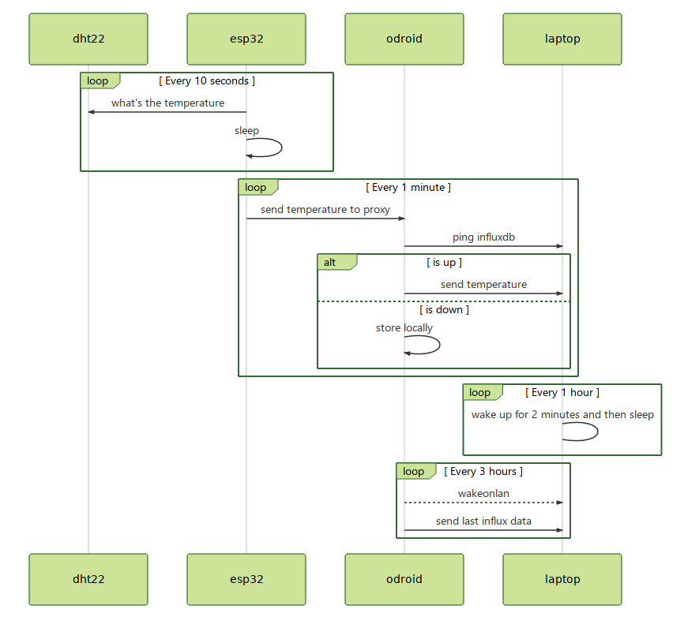
Since I am the only user and I only watch the grafana stats on my laptop this works. Later I’ve removed the steps at 1 hour and 3 hour, now everything is updated when I just open the resume my laptop from suspend.
Things I learned
All in all this took me about a year to finish, mostly because of some very minor and somewhat bigger time sinks.
Learning C and writing a Linux daemon
Choosing an IDE and other tools
Setting up my NeoVim just right
And ditching it for QtCreator
Looking for a OneNote replacement
Debugging a DHT22 protocol firmware error
DHT22 sensor got water logged
DHT22 sensor broke down
Shorting out two ESP32 boards
Making some nice fritzing images
Wake on WLAN working, not working
Using systemd timers instead of Wake on WLAN
Mysterious WiFi error, caused by a memory leak in an old ESP-IDF version
Wiring up an ESP32 debugger
Buying a Bosch BME680 temperature/humidity sensor that will hopefully be better then the DHTxx.
Making a better enclosure for the sensor part.
Making a weather display with my Kindle DX.
The future
During this time I often thought about the term yak shaving, I never managed to look it up but thought it meant that when one would shave a yak you’d have to start over by the time you’re done (this to the yak having large amounts of magically fast growing hair). It actually means something else, but I’m almost done, and I don’t have to start over, so that’s a good thing. In the coming months I’ll be adding some blog posts on these items, for now, here’s some pictures.
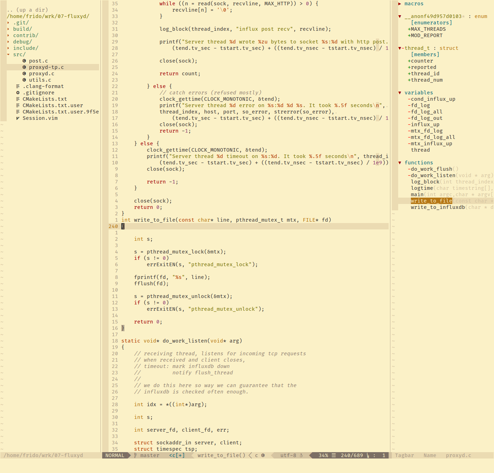
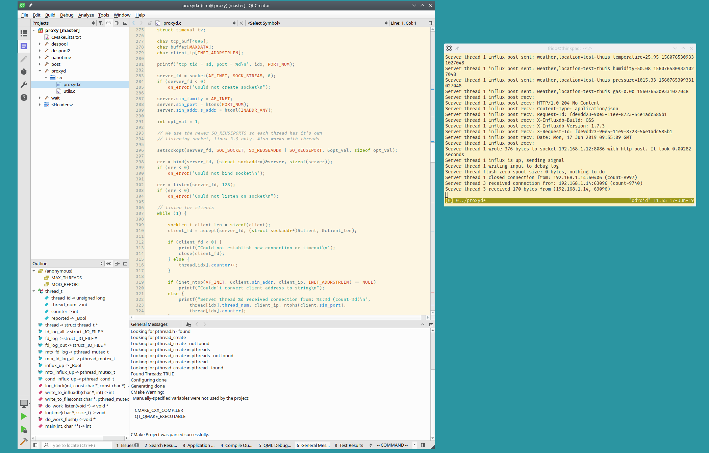
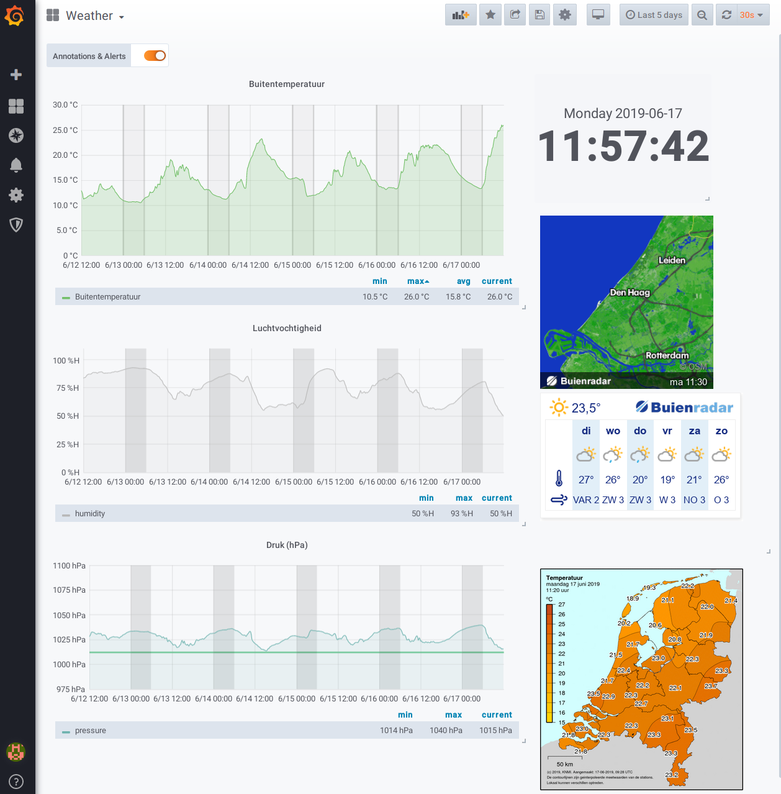
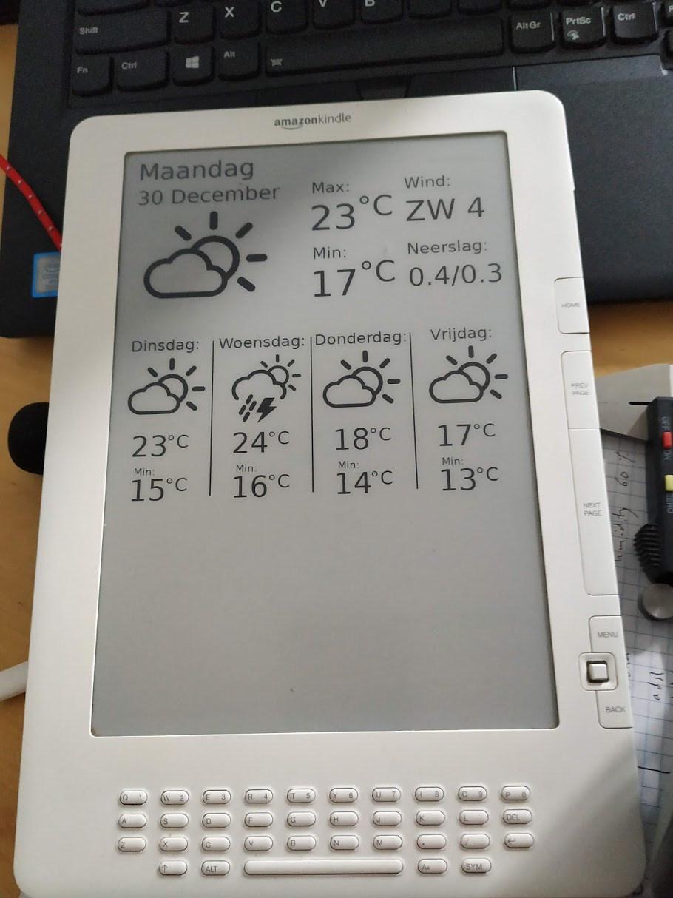
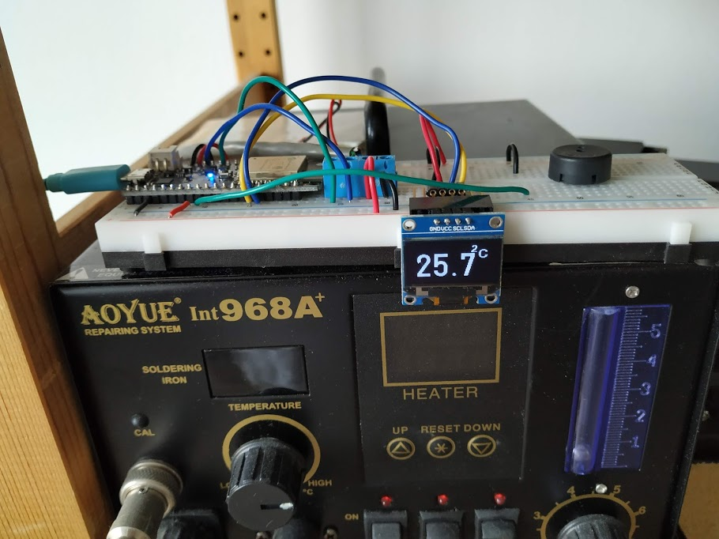
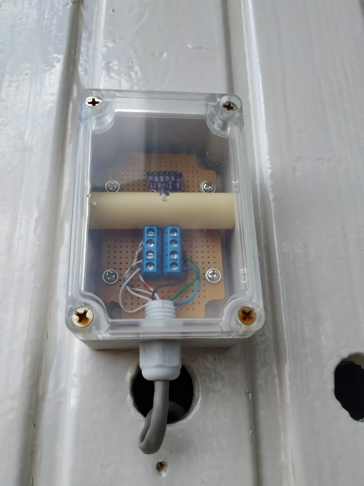
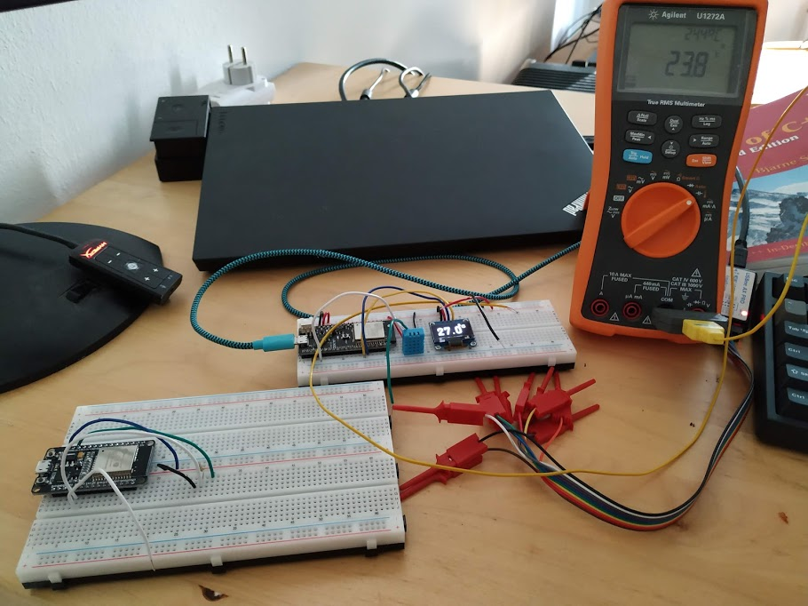
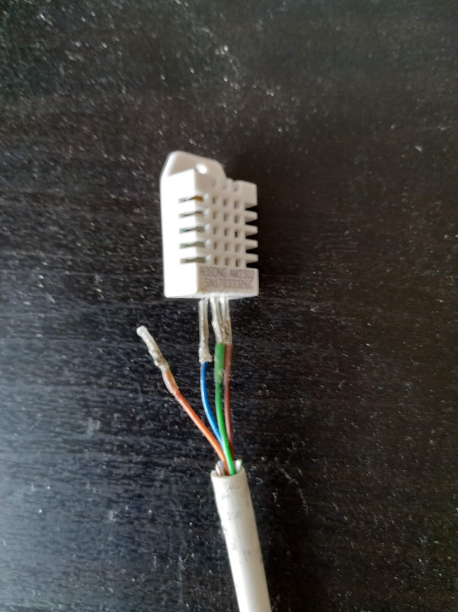